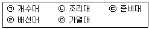
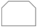
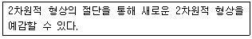
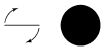
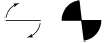

실내건축산업기사 (2015-08-16 기출문제)
1과목: 실내디자인론
1. 일반적인 부엌의 작업순서에 따른 작업대 배치 순서로 가장 알맞은 것은?

- ㉠ → ㉡ → ㉢ → ㉣ → ㉤
- ㉡ → ㉣ → ㉢ → ㉤ → ㉠
- ㉢ → ㉠ → ㉡ → ㉤ → ㉣
- ㉣ → ㉤ → ㉡ → ㉠ → ㉢
(정답률: 91%)

2. 단차에 의한 공간의 효과에 관한 설명으로 옳지 않은 것은?
- 단수가 적은 오르는 계단은 기대감을 줄 수 있다.
- 약간 내려가는 계단은 아늑한 곳으로 인도하는 느낌을 준다.
- 계단 위를 볼 수 없을 정도가 되면 불안감을 줄 가능성이 있다.
- 작은 방에서 큰 방으로의 연결은 내려오는 계단으로 되어야만 안정된 느낌을 준다.
(정답률: 73%)
3. 상점 진열창(show window)의 눈부심을 방지하기 위한 방법으로 옳지 않은 것은?
- 유리면을 경사지게 한다.
- 외부에 차양을 설치한다.
- 특수한 곡면유리를 사용한다.
- 진열창의 내부조도를 외부보다 낮게 한다.
(정답률: 76%)
4. 다음과 같은 단면을 갖는 천장의 유형은?

- 나비형
- 단저형
- 경사형
- 꺽임형
(정답률: 82%)
5. 다음 중 모듈(module)과 가장 관계가 깊은 디자인 원리는?
- 비례
- 균형
- 리듬
- 통일
(정답률: 72%)
6. 다음 중 다의도형 착시의 사례로 가장 알맞은 것은?
- 루빈의 항아리
- 펜로즈의 삼각형
- 쾨니히의 목걸이
- 포겐도르프의 도형
(정답률: 77%)
7. 상품의 유효진열범위에서 고객의 시선이 자연스럽게 머물고, 손으로 잡기에도 편한 높이인 골든 스페이스(Golden Space)의 범위는?
- 500~850mm
- 850~1250mm
- 1250~1400mm
- 1450~1600mm
(정답률: 90%)
8. 다음 중 유니버셜 공간의 개념적 설명으로 가장 알맞은 것은?
- 상업공간을 말한다.
- 모듈이 적용된 공간을 말한다.
- 독립성이 극대화된 공간을 말한다.
- 공간의 융통성이 극대화된 공간을 말한다.
(정답률: 76%)
9. 다음 설명과 가장 관련이 깊은 그림은?



(정답률: 74%)
10. 다음 중 실내디자인의 개념과 가장 거리가 먼 것은?
- 순수예술
- 공간예술
- 디자인 행위
- 계획, 실행과정, 결과
(정답률: 89%)
11. 주택 계획에서 LDK(Living Dining Kitchen)형에 관한 설명으로 옳지 않은 것은?
- 주부의 동선이 단축된다.
- 이상적인 식사공간 분위기 조성이 어렵다.
- 소요면적이 많아 소규모 주택에서는 도입이 어렵다.
- 거실, 식당, 부엌을 개방된 하나의 공간에 배치한 것이다.
(정답률: 77%)
12. 균형의 원리에 관한 설명으로 옳지 않은 것은?
- 어두운 색이 밝은 색보다 무겁게 느껴진다.
- 차가운 색이 따뜻한 색보다 무겁게 느껴진다.
- 기하학적인 형태가 불규칙적인 형태보다 무겁게 느껴진다.
- 복잡하고 거친 질감이 단순하고 부드러운 것보다 무겁게 느껴진다.
(정답률: 74%)
13. 미스 반 데어 로에에 의하여 디자인된 의자로, X자로 된 강철 파이프 다리 및 가죽으로 된 등받이와 좌석으로 구성되어 있는 것은?
- 바실리 의자
- 체스카 의자
- 파이미오 의자
- 바르셀로나 의자
(정답률: 72%)
14. 실내디자인의 원리 중 휴먼 스케일에 관한 설명으로 옳지 않은 것은?
- 인간의 신체를 기준으로 파악되고 측정되는 척도 기준이다.
- 공간의 규모가 웅대한 기념비적인 공간은 휴먼스케일을 적용하는데 용이하다.
- 휴먼 스케일이 잘 적용된 실내공간은 심리적, 시각적으로 안정된 느낌을 준다.
- 휴먼 스케일의 적용은 추상적, 상징적이 아닌 기능적인 척도를 추구하는 것이다.
(정답률: 87%)
15. 규모가 큰 주택에서 부엌과 식당 사이에 식품, 식기 등을 저장하기 위해 설치한 실을 무엇이라 하는가?
- 배선실(pantry)
- 가사실(utility room)
- 서비스 야드(service yard)
- 다용도실(multipurpose room)
(정답률: 54%)
16. 다음 중 오픈 오피스 플랜의 가장 큰 단점은?
- 고가의 공사비
- 청각적 프라이버시
- 시각적 프라이버시
- 부서간의 친밀감 감소
(정답률: 66%)
17. 판매공간의 상품강조조명에 관한 설명으로 옳지 않은 것은?
- 상품의 종류, 크기, 형태, 디스플레이 방법을 고려하여 설치한다.
- 판매대 안에 소형의 전구를 매입시키거나 스포트라이트를 설치한다.
- 상품강조조명과 환경조명의 조도대비는 1.5배 정도로 할 때 가장 효과적이다.
- 상품의 위치가 고정적이지 않을 경우에는 라이팅 트랙(lighting track)을 설치한다.
(정답률: 69%)
18. 주택의 거실에서 스크린(화면)을 중심으로 텔레비전을 시청하기에 적합한 최대 범위는?
- 45° 이내
- 50° 이내
- 60° 이내
- 70° 이내
(정답률: 71%)
19. 3차원 형상에 관한 설명으로 옳은 것은?
- 면과 선의 교차에서 나타난다.
- 2차원적 형상에 깊이나 볼륨을 더하여 창조된다.
- 어떤 형상을 규정하거나 한정하고, 면적을 분할한다.
- 삼각형, 사각형, 다각형, 원, 기타 기하학적 형태로 존재한다.
(정답률: 79%)
20. 다음 중 상징적 경계에 관한 설명으로 가장 알맞은 것은?
- 슈퍼그래픽을 말한다.
- 경계를 만들지 않는 것이다.
- 담을 쌓은 후 상징물을 설치하는 것이다.
- 물리적 성격이 약화된 시각적 영역표시를 말한다.
(정답률: 74%)
2과목: 색채 및 인간공학
21. 다음 중 시야(視野)에 대한 설명으로 가장 옳은 것은?
- 인간이 얼마만큼 멀리 볼 수 있는가를 말한다.
- 인간이 얼마만큼 가까이 볼 수 있는가를 말한다.
- 어느 한 점에 눈을 돌렸을 때 보이는 범위를 시각으로 나타낸 것이다.
- 어느 한 점에 눈을 돌렸을 때 보이는 범위를 거리로 나타낸 것이다.
(정답률: 75%)
22. 다음 중 작업효율에 관한 설명으로 가장 적절한 것은?
- 어떤 조건 하에서 일정한 일을 함에 있어 신속, 확실, 효과적으로 해낼 수 있는 능력을 말한다.
- 신체적으로 보다 큰 에너지 소모가 있을 때 “작업효율이 있다.”라고 한다.
- 신경적으로는 보다 큰 긴장, 심리적으로는 보다 큰 노력감이 있을 때 “작업효율이 좋다.”라고 한다.
- 에너지소비량을 S, 실현하여 얻은 작업을 P라고 하면 작업효율(E)은 S/P로 정의할 수 있다.
(정답률: 81%)
23. 다음 중 인간공학에 대한 설명으로 틀린 것은?
- 인간공학은 인간-기계 체계에 있어서 인간을 최우선적으로 고려한다.
- 장치의 설계에 있어서 인간공학은 효율성에 중점을 두고 있다.
- 인간공학이 설계 기술자와 연관을 갖게 된 것을 2차 세계대전 이후부터이다.
- 인간공학은 인간이 기계나 작업환경에 어떠한 방법으로 적응할 것인가에 대해 연구한다.
(정답률: 48%)
24. 다음 중 정보이론에 있어 정보량의 단위로 옳은 것은?
- code
- bit
- byte
- character
(정답률: 64%)
25. 다음 중 일반적으로 경계 및 경보 신호를 설계할 경우의 참고 되는 지침으로 틀린 것은?
- 귀는 중음역에 가장 민감하므로 500~3000Hz의 진동수를 사용한다.
- 고음은 장거리에 유용하므로 장거리용으로는 1000Hz 이상의 진동수를 사용한다.
- 신호가 장애물을 돌아가거나 칸막이를 사용할 때에는 500Hz 이하의 진동수를 사용한다.
- 배경 소음의 진동수와 다른 신호를 사용한다.
(정답률: 64%)
26. 다음 중 문자-숫자 표시에 있어서 암순응이 필요한 경우 가장 적절한 배색은?
- 흰 바탕에 검은 글씨
- 흰 바탕에 파랑 글씨
- 검은 바탕에 흰 글씨
- 검은 바탕에 빨강 글씨
(정답률: 62%)
27. 다음 중 폰(Phon)과 손(sone)에 관한 설명으로 틀린 것은?
- 40dB의 1000Hz 순음의 크기를 1sone이라 한다.
- 음량 수준이 10phon 증가하면 음량(sone)은 4배가 된다.
- 한 음의 phon 값으로 표시한 음량 수준은 이 음과 같은 크기로 들리는 1000Hz 순음의 음압 수준(dB)이다.
- 음량균형기법을 사용하여 정량적 평가를 하기 위한 음량 수준 척도를 작성하였고, 그 단위를 phon이라 한다.
(정답률: 56%)
28. 다음 중 인체 측정치의 1, 5, 10% tile과 같은 하위 백분위수를 기준으로 디자인하는 것은?
- 문의 넓이
- 사다리의 강도
- 선반의 높이
- 탈출구의 높이
(정답률: 72%)
29. 신체부위의 운동 중 '몸의 중심선으로의 이동'을 무엇이라 하는가?
- 내전(adduction)
- 외전(abduction)
- 굴곡(flexion)
- 신전(extension)
(정답률: 71%)
30. 다음 중 생체리듬에 관한 설명으로 옳은 것은?
- 육체적 리듬(P)은 33일을 주기로 반복한다.
- 지성적 리듬(I)은 28일을 주기로 반복한다.
- 감성적 리듬(S)은 23일을 주기로 반복한다.
- 생체리듬은 (+)와 (-)를 반복하며, (+)와 (-)의 변화하는 점을 위험일이라 한다.
(정답률: 67%)
31. 문ㆍ스펜서의 조화론 중 유사조화에 해당되는 색상은? (단, 기본색이 R인 경우)
- YR
- P
- B
- G
(정답률: 85%)
32. 노랑색 무늬를 어떤 바탕색 위에 놓으면 가장 채도가 높아 보이는가?
- 황토색
- 흰색
- 회색
- 검정색
(정답률: 82%)
33. 먼셀의 색채조화 원리에 대한 설명으로 틀린 것은?
- 평균명도가 N5가 되는 색들은 조화된다.
- 중간 정도 채도의 보색은 동일 면적으로 배색할 때 조화를 이룬다.
- 명도는 같으나 채도가 다른 색들은 조화를 이룬다.
- 색상이 다른 여러 색을 배색할 경우 동일한 명도와 채도를 적용하면 조화를 이루지 못한다.
(정답률: 66%)
34. 다음 중 보색관계가 아닌 것은?
- 빨강 –청록
- 노랑 - 남색
- 파랑 –주황
- 보라 - 초록
(정답률: 65%)
35. 디지털 색채시스템에서 RGB형식으로 검정을 표현하기에 적절한 수치는?
- R=255, G=255, B=255
- R=0, G=0, B=255
- R=0, G=0, B=0
- R=255, G=255, B=0
(정답률: 60%)
36. 컬러 TV의 화면이나 인상파 화가의 점묘법, 직물 등에서 발견되는 색의 혼색방법은?
- 동시감법혼색
- 계시가법혼색
- 병치가법혼색
- 감법혼색
(정답률: 65%)
37. 다음 중 한색과 난색에 대한 설명이 잘못된 것은?
- 노랑 계통은 난색이고 진출색, 팽창색이다.
- 파랑 계통은 한색이고 후퇴색, 수축색이다.
- 보라 계통은 한색이고 후퇴색, 수축색이다.
- 빨강 계통은 난색이고 진출색, 팽창색이다.
(정답률: 82%)
38. 색의 3속성에 관한 설명으로 옳은 것은?
- 명도는 빨강, 노랑, 파랑 등과 같은 색감을 말한다.
- 채도는 색의 강도를 나타내는 것으로 순색의 정도를 의미한다.
- 채도는 빨강, 노랑, 파랑 등과 같은 색상의 밝기를 말한다.
- 명도는 빨강, 노랑, 파랑 등과 같은 색상의 선명함을 말한다.
(정답률: 71%)
39. 혼색계에 대한 설명 중 올바른 것은?
- 심리, 물리적인 빛의 혼색 실험에 기초를 둠
- 오스트발트 표색계
- 먼셀표색계
- 물체색을 표시하는 표색계
(정답률: 46%)
40. 색채 측정 및 색채 관리에 가장 널리 활용되고 있는 것은 어느 것인가?
- Lab 형식
- RGB 형식
- HSB 형식
- CMY 형식
(정답률: 62%)
3과목: 건축재료
41. 비철금속에 관한 설명으로 옳은 것은?
- 이온화 경향이 높을수록 부식되기 어렵다.
- 동의 전기전도율, 열전도율은 은 다음으로 높다.
- 알루미늄은 산에는 침식되지만 내해수성은 우수하다.
- 아연은 내산, 내알칼리성이 우수하여 도금제로 사용된다.
(정답률: 50%)
42. 황동의 주성분으로 옳은 것은?
- 구리와 아연
- 구리와 니켈
- 구리와 알루미늄
- 구리와 철
(정답률: 71%)
43. 건축용 유리 중 데크유리라고도 하며, 지하실 또는 지붕의 채광용으로 이용되는 것은?
- 강화유리
- 열반사유리
- 기포유리
- 프리즘유리
(정답률: 68%)
44. 목재의 건조 목적과 거리가 먼 것은?
- 목재의 강도 증진
- 도료, 주입제 및 접착제의 효과 증대
- 균류 발생의 방지
- 수지낭(resin pocket)과 연륜의 제거
(정답률: 74%)
45. 시멘트의 조성 화합물 중에서 수화작용을 빠르게 하여 1주 이내의 강도 발생에 결정적인 역할을 하는 것은?
- 규산 3석회
- 규산 2석회
- 알루민산 3석회
- 알루민산철 4석회
(정답률: 57%)
46. 골재의 함수상태에 관한 설명 중 옳지 않은 것은?
- 절대건조상태란 대기 중에서 완전히 건조한 상태이다.
- 기건상태란 골재 내부에 약간의 수분이 있으나 포화되지 않은 상태이다.
- 표면건조상태란 골재 내부와 표면의 패인 곳이 물로 채워져 표면에 여분의 물을 갖고 있지 않을 때의 상태를 말한다.
- 습윤상태란 골재의 내부가 포수상태이고 외부는 표면수에 의해 젖어있는 상태이다.
(정답률: 47%)
47. ALC(Autoclaved lightweight concrete)의 특성에 관한 설명 중 옳지 않은 것은?
- 열전도율이 우수한 단열성을 갖고 있지만 단열성으로 인해 발생되는 결로에 유의해야 한다.
- 무기질의 불연성 재료로서 내화구조로 사용할 정도의 내화성을 갖고 있다.
- 흡음률 및 차음성이 우수하여 높은 흡음성이 요구되는 곳에 특별한 마감 없이 사용할 수 있다.
- 비중에 비하여 높은 압축강도를 갖고 있지만 구조재로서는 부적합하여 주로 비내력벽으로 사용된다.
(정답률: 51%)
48. 단열재의 선정조건 중 옳지 않은 것은?
- 비중이 작을 것
- 투기성이 클 것
- 흡수율이 낮을 것
- 열전도율이 낮을 것
(정답률: 67%)
49. 구조용 목재의 종류와 각각의 특성에 대한 설명으로 옳은 것은?
- 낙엽송 - 활엽수로서 강도가 크고 곧은 목재를 얻기 쉽다.
- 느티나무 - 활엽수로서 강도가 크고 내부식성이 크므로 기둥, 벽판, 계단판 등의 구조체에 국부적으로 쓰인다.
- 흑송 - 재질이 무르고 가공이 용이하며 수축이 적어 주택의 내장재로 주로 사용된다.
- 떡갈나무 - 곧은 대재(大材)이며, 미려하여 수장겸용구조재로 쓰인다.
(정답률: 60%)
50. 방청도료에 해당되지 않는 것은?
- 광명단
- 에칭 프라이머
- 래커
- 크롬산 아연도료
(정답률: 52%)
51. 목재의 역학적 성질에 대한 설명 중 옳지 않은 것은?
- 섬유포화점 이상에서는 함수율 변화에 따른 강도가 일정하나 섬유포화점 이하에서는 함수율이 감소할수록 강도는 증대한다.
- 비중이 증가할수록 외력에 대한 저항이 증가한다.
- 목재의 강도나 탄성은 가력방향과 섬유방향과의 관계에 따라 현저한 차이가 있다.
- 압축강도는 옹이가 있으면 감소하나 인장강도는 영향을 받지 않는다.
(정답률: 70%)
52. 점토제품의 흡수성과 관계된 현상으로 가장 거리가 먼 것은?
- 녹물 오염
- 백화(白華)
- 균열
- 동해(凍害)
(정답률: 68%)
53. 개구부재료에 요구되는 성능과 가장 거리가 먼 것은?
- 기밀성
- 내풍압성
- 개폐성
- 내동결융해성
(정답률: 61%)
54. 각종 석재에 관한 설명 중 옳지 않은 것은?
- 화강암은 내구성 및 강도는 크지만, 내화성이 약하다.
- 대리석은 석회석이 변화되어 결정화한 것으로 내화성이 크고 연질이다.
- 석회석은 석질은 치밀하고 강도가 크나 화학적으로 산에 약하다.
- 안산암은 강도, 경도, 비중이 크고 내화성도 우수하다.
(정답률: 47%)
55. 물시멘트비가 50%일 때 시멘트 10포를 쓴 콘크리트에 필요한 물의 양을 계산하면? (단, 시멘트 1포 중량은 40kg으로 한다.)
- 150L
- 200L
- 250L
- 300L
(정답률: 76%)
56. 유리섬유로 보강하여 FRP(Fiber Reinforced Plastics)를 만드는데 이용되는 수지는?
- 폴리염화비닐수지
- 폴리카보네이트
- 폴리에틸렌수지
- 불포화 폴리에스테르수지
(정답률: 62%)
57. 열가소성 수지에 해당되지 않는 것은?
- 염화비닐수지
- 아크릴수지
- 실리콘수지
- 폴리에틸렌수지
(정답률: 44%)
58. 콘크리트의 강도를 결정하는 변수에 관한 설명으로 옳지 않은 것은?
- 물시멘트비가 일정한 콘크리트에서 공기량 증가에 따른 콘크리트 강도는 감소한다.
- 물시멘트비가 일정할 때 빈배합콘크리트가 부배합의 경우보다 높은 강도를 낼 수 있다.
- 콘크리트 비빔방법 중 손비빔으로 하는 것 보다 기계비빔으로 하는 것이 강도가 커진다.
- 물시멘트비가 일정할 때 굵은 골재의 최대 치수가 클수록 콘크리트의 강도는 커진다.
(정답률: 62%)
59. 콘크리트의 시공연도 시험방법과 거리가 먼 것은?
- 슬럼프시험
- 플로우시험
- 체가름시험
- 리몰딩시험
(정답률: 57%)
60. 벽지에 관한 설명 중 옳지 않은 것은?
- 비닐벽지 - 플라스틱으로 코팅한 벽지와 순수한 비닐로만 이루어진 벽지로 구분되며 불에 강하지만 오염이 되었을 시 제거가 어렵다.
- 종이벽지 - 가격이 상대적으로 저렴하며 색상, 무늬 등이 다양하고 질감도 부드럽다.
- 직물벽지 - 질감이 부드럽고 자연미가 있어 온화하고 고급스러운 분위기를 자아내므로 벽지 중 가장 고급품에 속한다.
- 무기질벽지 - 질석벽지, 금속박 벽지 등이 있다.
(정답률: 80%)
4과목: 건축일반
61. 방염대상물품의 방염성능기준에서 버너의 불꽃을 제거한 때부터 불꽃을 올리지 아니하고 연소하는 상태가 그칠 때까지의 시간은 몇 초 이내 인가?
- 5초 이내
- 10초 이내
- 20초 이내
- 30초 이내
(정답률: 56%)
62. 건축관계법령상 복도의 최소 유효너비 기준이 가장 작은 것은? (단, 양옆에 거실이 있는 복도)
- 오피스텔
- 초등학교
- 유치원
- 고등학교
(정답률: 74%)
63. 상하플랜지에 ㄱ형강을 쓰고 웨브재로 대철을 45°, 60° 또는 90°등의 일정한 각도로 접합한 강구조의 조립보는?
- 격자보
- 래티스보
- 형강보
- 판보
(정답률: 50%)
64. 철골 접합 방법 중 용접 접합에 대한 설명으로 옳지 않은 것은?
- 강재의 양을 절약할 수 있다.
- 단면처리 및 이음이 쉽다.
- 품질검사가 쉽다.
- 응력전달이 확실하다.
(정답률: 64%)
65. 옥내소화전 설비를 설치하여야 하는 소방대상물의 연면적 기준은?
- 1000m2 이상
- 2000m2 이상
- 3000m2 이상
- 5000m2 이상
(정답률: 31%)
66. 건축허가 등을 할 때 미리 소방본부장 또는 소방서장의 동의를 받아야 하는 대상 건축물이 아닌 것은?
- 연면적 400m2 이상인 건축물
- 항공기 격납고
- 위험물 저장 및 처리시설
- 차고 ㆍ 주차장으로 사용되는 층 중 바닥면적이 150m2인 층이 있는 시설
(정답률: 66%)
67. 건축물의 내부에 설치하는 피난계단의 구조에 대한 기준으로 옳지 않은 것은?
- 계단실은 창문ㆍ출입구 기타 개구부를 제외한 당해 건축물의 다른 부분과 내화구조의 벽으로 구획할 것
- 계단실에는 예비전원에 의한 조명설비를 할 것
- 계단실의 바깥쪽과 접하는 창문 등은 당해 건축물의 다른 부분에 설치하는 창문 등으로부터 2m 이상의 거리를 두고 설치할 것
- 계단실의 실내에 접하는 부분의 마감은 난연재료로 할 것
(정답률: 78%)
68. 기본벽돌(190×90×57)을 사용하여 1.5B로 벽을 쌓을 때 벽두께는? (단, 공간쌓기 아님)
- 260mm
- 290mm
- 310mm
- 320mm
(정답률: 80%)
69. 다음 중 일체식 구조에 해당하는 것은?
- 목구조
- 블록구조
- 철골구조
- 철근콘크리트구조
(정답률: 74%)
70. 한국의 전통사찰 본당에서 내부공간 구성의 1차 인지요소로서 공간의 심리적이고 극적인 효과를 유도시키는 구성요소라고 할 수 있는 것은?
- 마루
- 개구부
- 공포대
- 기단
(정답률: 54%)
71. 단독주택에서 거실의 바닥면적이 200m2인 거실에 창문을 설치하여 채광을 하고자 할 때 그 채광 창문의 최소 면적은?
- 40m2
- 30m2
- 20m2
- 10m2
(정답률: 76%)
72. 목재 강도에 관한 설명으로 옳지 않은 것은?
- 목재의 뒤틀림은 목재의 형태는 변형될지라도 강도는 바뀌지 않는다.
- 섬유에 평행한 방향측에서 일반적으로 강도는 인장＞압축＞전단 순이다.
- 섬유포화점의 함수율은 30% 정도이며, 이 이하에서는 함수율이 저하됨에 따라 강도는 커진다.
- 심재는 변재보다 단단하여 강도가 크고 신축 등의 변형이 적다.
(정답률: 68%)
73. 다음 중 경보설비에 포함되지 않는 것은?
- 자동화재속보설비
- 비상조명등
- 비상방송설비
- 누전경보기
(정답률: 69%)
74. 소방시설의 구분에 속하지 않는 것은?
- 소화설비
- 급수설비
- 소화활동설비
- 소화용수설비
(정답률: 73%)
75. 건축물의 피난ㆍ방화구조 등의 기준에 관한 규칙에서 규정한 방화구조에 해당하지 않는 것은?
- 철망모르타르로서 그 바름두께가 2.5cm인 것
- 석고판 위에 시멘트모르타르를 바른 것으로서 그 두께의 합계가 3cm인 것
- 시멘트모르타르 위에 타일을 붙인 것으로서 그 두께의 합계가 2cm인 것
- 심벽에 흙으로 맞벽치기 한 것
(정답률: 60%)
76. 한국의 목조건축 입면에서 벽면구성을 위한 의장의 성격을 결정지어 주는 기본적인 요소는?
- 기둥-주두-창방
- 기둥-창방-평방
- 기단-기둥-주두
- 기단-기둥-창방
(정답률: 62%)
77. 예술 및 수공예운동(Arts & Crafts Movement)의 디자이너가 아닌 사람은?
- 에밀 자크 룰만(Emile Jacques Ruhlmann)
- 어니스트 김슨(Ernest Gimson)
- 필립 웨브(Philip Webb)
- 찰스 로버트 애쉬비(Charles Robert Ashbee)
(정답률: 50%)
78. 조적조에서 내력벽을 막힌줄눈으로 하는 주된 이유는?
- 상부하중을 벽면 전체에 골고루 분산시키기 위해서
- 부착강도를 높이기 위해서
- 인장력에 대한 강도를 증가시키기 위해서
- 벽돌 벽면의 의장 효과를 내기 위해서
(정답률: 68%)
79. 연면적 1,000m2 이상인 목조 건축물에서 외벽의 구조 및 지붕의 재료로 옳은 것은?
- 방화구조의 외벽, 불연재료의 지붕
- 내화구조의 외벽, 불연재료의 지붕
- 방화구조의 외벽, 난연재료의 지붕
- 내화구조의 외벽, 난연재료의 지붕
(정답률: 51%)
80. 건축물에 설치하는 방화벽의 구조에 대한 기준으로 옳지 않은 것은?
- 내화구조로써 홀로 설 수 있는 구조라야 한다.
- 방화벽에 설치하는 출입문의 너비 및 높이는 각각 2.5m 이하로 한다.
- 방화벽의 양쪽 끝과 위쪽 끝을 건축물의 외벽면 및 지붕면으로부터 0.5m 이상 튀어 나오게 한다.
- 방화벽에 설치하는 출입문에는 을종방화문을 설치하여야 한다.
(정답률: 71%)